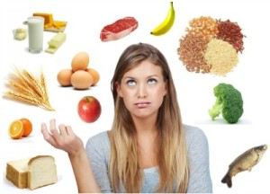

8 tips for healthy eating - NHS
 Skip to main content MenuMenu Close menu
Home Health A-Z Live Well Mental health Care and support Pregnancy NHS services Home Live Well Eat wellBack to Eat well
8 tips for healthy eating - Eat well
Secondary navigation
Food and diet Nutrition and food groups Eating a balanced diet 8 tips for healthy eating The Eatwell Guide Food labels Food labelling terms Reference intakes on food labels Starchy foods and carbohydrates Dairy and alternatives Meat in your diet Fish and shellfish The healthy way to eat eggs Beans and pulses Water, drinks and your health Eating processed foods 5 A Day Why 5 A Day? What counts? 5 A Day portion sizes 5 A Day recipes 5 A Day tips 5 A Day FAQs Food facts Fat: the facts Salt: the facts Sugar: the facts Top sources of added sugar What does 100 calories look like? Red meat and the risk of bowel cancer What is a Mediterranean diet? Eating on a budget 20 tips to eat well for less Food safety How to prepare and cook food safely How to store food and leftovers 10 ways to prevent food poisoning Why you should never wash raw chicken Cooking turkey How to wash fruit and vegetables The truth about sweeteners Sprouted seeds safety advice Vegetarians and vegans The vegetarian diet The vegan diet Vegetarian and vegan mums-to-be Vegetarian and vegan diets Q&A Calorie checker Recipes and tips Healthy recipes Healthy breakfasts Surprising 100-calorie snacks Food tips 8 healthy eating tips How to eat more fibre Healthy food swaps Healthy breakfast cereals How to eat less saturated fat Tips for a lower salt diet How to cut down on sugar Healthier takeaways Food and drinks for sport Healthy eating for teens Digestive health Common digestive problems and how to treat them Good foods to help your digestion 5 lifestyle tips for a healthy tummy Beat the bloat Should you cut out bread to stop bloating? Credit:These 8 practical tips cover the basics of healthy eating and can help you make healthier choices.
The key to a healthy diet is to eat the right amount of calories for how active you are so you balance the energy you consume with the energy you use.
If you eat or drink more than your body needs, you'll put on weight because the energy you do not use is stored as fat. If you eat and drink too little, you'll lose weight.
You should also eat a wide range of foods to make sure you're getting a balanced diet and your body is receiving all the nutrients it needs.
It's recommended that men have around 2,500 calories a day (10,500 kilojoules). Women should have around 2,000 calories a day (8,400 kilojoules).
Most adults in the UK are eating more calories than they need and should eat fewer calories.
1. Base your meals on higher fibre starchy carbohydrates
Starchy carbohydrates should make up just over a third of the food you eat. They include potatoes, bread, rice, pasta and cereals.
Choose higher fibre or wholegrain varieties, such as wholewheat pasta, brown rice or potatoes with their skins on.
They contain more fibre than white or refined starchy carbohydrates and can help you feel full for longer.
Try to include at least 1 starchy food with each main meal. Some people think starchy foods are fattening, but gram for gram the carbohydrate they contain provides fewer than half the calories of fat.
Keep an eye on the fats you add when you're cooking or serving these types of foods because that's what increases the calorie content – for example, oil on chips, butter on bread and creamy sauces on pasta.
2. Eat lots of fruit and veg
It's recommended that you eat at least 5 portions of a variety of fruit and veg every day. They can be fresh, frozen, canned, dried or juiced.
Getting your 5 A Day is easier than it sounds. Why not chop a banana over your breakfast cereal, or swap your usual mid-morning snack for a piece of fresh fruit?
A portion of fresh, canned or frozen fruit and vegetables is 80g. A portion of dried fruit (which should be kept to mealtimes) is 30g.
A 150ml glass of fruit juice, vegetable juice or smoothie also counts as 1 portion, but limit the amount you have to no more than 1 glass a day as these drinks are sugary and can damage your teeth.
3. Eat more fish, including a portion of oily fish
Fish is a good source of protein and contains many vitamins and minerals .
Aim to eat at least 2 portions of fish a week, including at least 1 portion of oily fish.
Oily fish are high in omega-3 fats, which may help prevent heart disease.
Oily fish include:
salmon trout herring sardines pilchards mackerelNon-oily fish include:
haddock plaice coley cod tuna skate hakeYou can choose from fresh, frozen and canned, but remember that canned and smoked fish can be high in salt.
Most people should be eating more fish, but there are recommended limits for some types of fish.
Find out more about fish and shellfish
4. Cut down on saturated fat and sugar
Saturated fat
You need some fat in your diet, but it's important to pay attention to the amount and type of fat you're eating.
There are 2 main types of fat: saturated and unsaturated. Too much saturated fat can increase the amount of cholesterol in the blood, which increases your risk of developing heart disease.
On average, men should have no more than 30g of saturated fat a day. On average, women should have no more than 20g of saturated fat a day.
Children under the age of 11 should have less saturated fat than adults, but a low-fat diet is not suitable for children under 5.
Saturated fat is found in many foods, such as:
fatty cuts of meat sausages butter hard cheese cream cakes biscuits lard piesTry to cut down on your saturated fat intake and choose foods that contain unsaturated fats instead, such as vegetable oils and spreads, oily fish and avocados.
For a healthier choice, use a small amount of vegetable or olive oil, or reduced-fat spread instead of butter, lard or ghee.
When you're having meat, choose lean cuts and cut off any visible fat.
All types of fat are high in energy, so they should only be eaten in small amounts.
Sugar
Regularly consuming foods and drinks high in sugar increases your risk of obesity and tooth decay .
Sugary foods and drinks are often high in energy (measured in kilojoules or calories), and if consumed too often can contribute to weight gain. They can also cause tooth decay, especially if eaten between meals.
Free sugars are any sugars added to foods or drinks, or found naturally in honey, syrups and unsweetened fruit juices and smoothies.
This is the type of sugar you should be cutting down on, rather than the sugar found in fruit and milk.
Many packaged foods and drinks contain surprisingly high amounts of free sugars.
Free sugars are found in many foods, such as:
sugary fizzy drinks sugary breakfast cereals cakes biscuits pastries and puddings sweets and chocolate alcoholic drinksFood labels can help. Use them to check how much sugar foods contain.
More than 22.5g of total sugars per 100g means the food is high in sugar, while 5g of total sugars or less per 100g means the food is low in sugar.
Get tips on cutting down on sugar in your diet
5. Eat less salt: no more than 6g a day for adults
Eating too much salt can raise your blood pressure. People with high blood pressure are more likely to develop heart disease or have a stroke.
Even if you do not add salt to your food, you may still be eating too much.
About three-quarters of the salt you eat is already in the food when you buy it, such as breakfast cereals, soups, breads and sauces.
Use food labels to help you cut down. More than 1.5g of salt per 100g means the food is high in salt.
Adults and children aged 11 and over should eat no more than 6g of salt (about a teaspoonful) a day. Younger children should have even less.
Get tips on cutting down on salt in your diet
6. Get active and be a healthy weight
As well as eating healthily, regular exercise may help reduce your risk of getting serious health conditions. It's also important for your overall health and wellbeing.
Read more about the benefits of exercise and physical activity guidelines for adults .
Being overweight or obese can lead to health conditions, such as type 2 diabetes, certain cancers, heart disease and stroke. Being underweight could also affect your health.
Most adults need to lose weight by eating fewer calories.
If you're trying to lose weight, aim to eat less and be more active. Eating a healthy, balanced diet can help you maintain a healthy weight.
Check whether you're a healthy weight by using the BMI healthy weight calculator .
Start the NHS weight loss plan , a 12-week weight loss guide that combines advice on healthier eating and physical activity.
If you're underweight, see underweight adults . If you're worried about your weight, ask your GP or a dietitian for advice.
7. Do not get thirsty
You need to drink plenty of fluids to stop you getting dehydrated. The government recommends drinking 6 to 8 glasses every day. This is in addition to the fluid you get from the food you eat.
All non-alcoholic drinks count, but water, lower fat milk and lower sugar drinks, including tea and coffee, are healthier choices.
Try to avoid sugary soft and fizzy drinks, as they're high in calories. They're also bad for your teeth.
Even unsweetened fruit juice and smoothies are high in free sugar.
Your combined total of drinks from fruit juice, vegetable juice and smoothies should not be more than 150ml a day, which is a small glass.
Remember to drink more fluids during hot weather or while exercising.
8. Do not skip breakfast
Some people skip breakfast because they think it'll help them lose weight.
But a healthy breakfast high in fibre and low in fat, sugar and salt can form part of a balanced diet, and can help you get the nutrients you need for good health.
A wholegrain lower sugar cereal with semi-skimmed milk and fruit sliced over the top is a tasty and healthier breakfast.
Further information
The Eatwell Guide can help you get the right balance of the 5 main food groups. The guide shows you how much of what you eat should come from each food group. Read more about eating a balanced diet and understanding calories . Page last reviewed: 12 April 2019
Next review due: 12 April 2022
Support links
NHS sites About us Contact us Profile editor login Site map Accessibility statement Our policies Cookies© Crown copyright